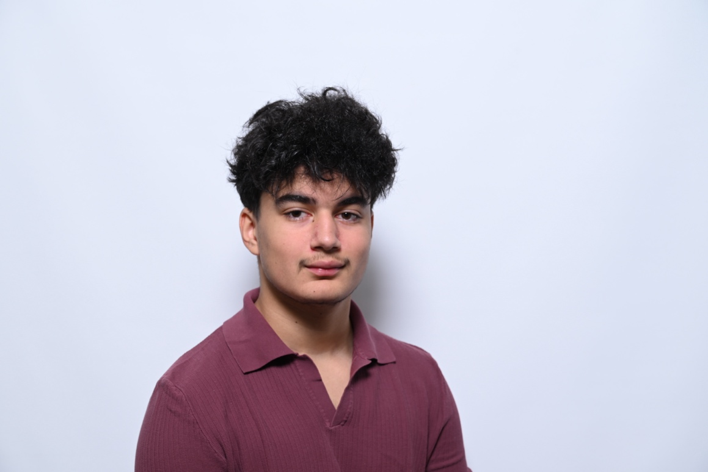

Teamfähigkeit
An der Albert Summer School arbeitete ich mit Menschen zusammen, die ich vorher nicht kannte. Gemeinsam entwickelten und präsentierten wir ein Start-up-Konzept, teilten Aufgaben auf und halfen einander.
ZusammenarbeitPortfolio 2026
Ich bin Rayyan Hanafi. Ich verbinde Gestaltung, Technologie, Wirtschaft und Kommunikation – und möchte diese Interessen zu meinem Beruf machen.
Was ich mitbringe
01 / Über mich
Seit der 2. Sek beschäftige ich mich mit Berufen, die meine Interessen verbinden. Am Beruf des Mediamatikers gefällt mir die Mischung aus Gestaltung, Technologie und sozialen Medien. Der Beruf des Kaufmanns interessiert mich besonders wegen der Bereiche Finanzen, Marketing, Kommunikation und Verkauf. Ich arbeite gerne im Büro, beschäftige mich mit wirtschaftlichen Themen und möchte vielseitig mit Menschen und digitalen Werkzeugen arbeiten.
Ich arbeite gerne mit anderen Menschen, plane Aufgaben zuverlässig und lerne laufend Neues. Besonders motivieren mich Projekte, bei denen Kreativität, Kommunikation und logisches Denken zusammenkommen.
02 / Meine Stärken
Sechs Stärken, die ich in Schule, Projekten und praktischen Erfahrungen einsetzen konnte.
An der Albert Summer School arbeitete ich mit Menschen zusammen, die ich vorher nicht kannte. Gemeinsam entwickelten und präsentierten wir ein Start-up-Konzept, teilten Aufgaben auf und halfen einander.
ZusammenarbeitIch zeichne, interessiere mich für Gestaltung und arbeite gerne an Webseiten sowie eigenen digitalen Ideen.
GestaltungIn einer grossen Online-Community koordinierte ich das Moderationsteam, Events und Partnerschaften.
VerantwortungBei einer Schnupperlehre in einer Bank lernte ich, Kundinnen und Kunden freundlich, klar und professionell anzusprechen.
MenschenEnglisch ist meine Muttersprache. Im Stellwerk-Test erreichte ich 700 Punkte.
MutterspracheMathematik und Geometrie gehören zu meinen Stärken. Genaues Arbeiten und das Entwickeln eigener Lösungen machen mir Freude.
Note 603 / Erfahrung
Erfahrungen, die mir Teamarbeit, Verantwortung und professionelles Auftreten beigebracht haben.
Gemeinsam mit Kollegen baute ich eine Online-Community auf. Ich organisierte Veranstaltungen, koordinierte das Moderationsteam und pflegte Partnerschaften mit anderen Online-Gemeinschaften.
In einem neuen Team entwickelten, organisierten und präsentierten wir ein Start-up-Konzept. Dabei lernte ich mehr über Marketing, Geschäftsführung, KI, Programmierung, Excel und Präsentationstechnik.
Während der Schnupperlehre erhielt ich Einblicke in Bankoperationen und Kundenkontakt. Besonders positiv wurde meine freundliche und verständliche Kommunikation bewertet.
04 / Digitale Fähigkeiten
05 / Ausbildung
Aktuell bereite ich mich gezielt auf meinen Einstieg in die Berufswelt vor.
Schulische Weiterbildung
Gemeinde Maur · Looren
06 / Sprachen & Interessen
In meiner Freizeit beschäftigen mich Technologie, soziale Medien, Videospiele, Manga und Zeichnen, Sport sowie Wirtschaft, KI und Programmierung.
Portfolio 2026
Ich möchte meine Kreativität, mein technisches Interesse, mein kaufmännisches Interesse und meine Freude an Zusammenarbeit in eine Lehrstelle als Mediamatiker oder Kaufmann EFZ einbringen.